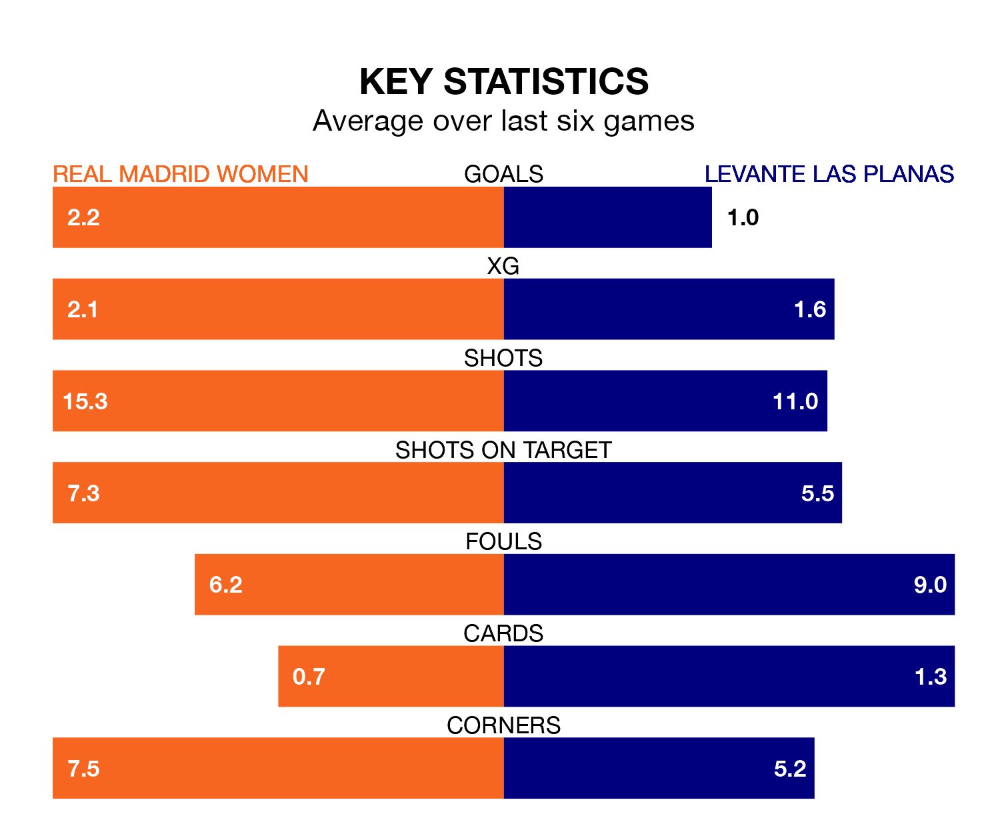

Relegation candidates Levante Las Planas face a challenge away against high-flying Real Madrid Women at the Estadio Alfredo Di Stéfano on Sunday.
Levante Las Planas are 14th in the Liga F table, and have picked up four wins and eight draws in their 24 games to date.
Madrid Women, meanwhile, are second in the standings with 58 points, having won 19 and drawn one, and are 12 points behind table-toppers Barcelona Women.
Madrid Women are in fantastic form in Liga F, with five wins and one loss from their last six games.
With no wins and a draw over that period, Levante Las Planas's form is much worse – they have taken one point from 18, compared to the home side's 15.
With 62 goals in 24 games so far this season, Madrid Women are the league's second-highest scorers with 2.6 goals per game. And they are conceding fewer than average, letting in 27 goals at a rate of 1.1 per game.
The visitors, meanwhile, are below average scorers, with 1.2 goals per game, compared to a league average of 1.6. They have conceded 2.0 goals per game.
With María Isabel Rodríguez Rivero between the sticks, Madrid Women can rely on one of the league's safest pair of hands. She has kept eight clean sheets in her 22 appearances this season, and only one other 'keeper – Barcelona Women's Catalina Thomas Coll Lluch – has been able to prevent the opposition scoring on more occasions in Liga F.
In Levante Las Planas's net, Nayluisa Jhaylenny Cáceres Acevedo has one clean sheet in 23 games. She has conceded a goal every 47 minutes, more than twice as often as the 116 minutes between goals for Rodríguez Rivero.
In the last three years, Madrid Women and Levante Las Planas have played each other on three occasions. Madrid Women won all of them.
Their last meeting was on December 17, when Madrid Women won 2-0 away.
Madrid Women's last match was on April 20, a 4-2 win against Levante Women, with Linda Lizeth Caicedo Alegría (two), Claudia Zornoza Sánchez and Maite Oroz Areta getting the goals for Madrid Women.
Levante Las Planas lost 4-2 against Barcelona Women last time out, on Wednesday, with Allegra Poljak and Irina Priscilla Uribe García on the scoresheet.
Updated: 07:59 (UTC), 26/04/24